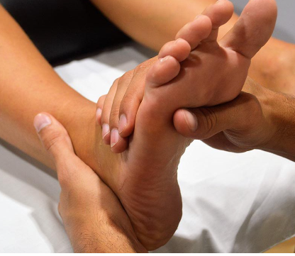
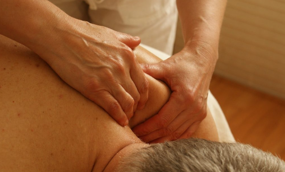
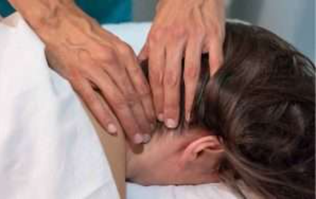

Instructorado de chi Kung terapeutico primer nivel


La duracion del curso es de 9 meses.
Se realizaran 1 clase teorica al mes y clases practicas 2 veces por semana.
Origen y filosofía
El Chi Kung o Qi Gong es una antigua práctica china que combina movimientos suaves,
respiración consciente,meditación para cultivar y equilibrar la energía vital o "Qi" en el cuerpo.
El término "Chi" o "Qi" se refiere a la energía vital,mientras que "Kung" o "Gong" se traduce como trabajo o habilidad.
En conjunto,Chi Kung significa "trabajo con la energía vital".
Tiene sus raíces en la filosofía taoísta, la medicina tradicional china y las artes marciales chinas.
Data de hace más de 4,000 años, y su práctica se desarrolló como un método para promover la salud, el bienestar y la longevidad.
La creencia central en Chi Kung es que el "Qi" fluye a través de los meridianos o canales de energía en el cuerpo,
y que el equilibrio de este flujo es esencial para la salud física, mental y espiritual.
Beneficios del Chi kung
El Chi Kung ofrece una variedad de beneficios físicos, mentales y emocionales:
- Mejora la circulación y la energía: Los movimientos ayudan a estimular el flujo sanguíneo y a equilibrar la energía.
- Reduce el estrés y la ansiedad: Las técnicas de respiración y concentración ayudan a calmar el sistema nervioso.
- Fortalece el sistema inmunológico: Promueve la salud general y refuerza la capacidad del cuerpo para combatir enfermedades.
- Aumenta la flexibilidad y la coordinación: Los movimientos suaves ayudan a mejorar la movilidad articular y la flexibilidad.
- Fomenta el equilibrio emocional y mental: Los ejercicios ayudan a despejar la mente, promoviendo claridad mental y estabilidad emocional.
Curso Intensivo de Masajes Tui Na basado en Medicina Tradicional china



La duracion del curso es de 9 meses.
Se realizaran 1 clase al mes con un estimulo de 4 horas.
Origen y filosofía
El masaje Tui Na se basa en la teoría de los meridianos o canales energéticos del cuerpo humano,
por donde fluye la energía vital o "Qi." En MTC, la salud se asocia con el flujo libre y equilibrado de Qi.
Cuando el Qi se estanca o desequilibra, puede dar lugar a dolencias físicas y emocionales.
El masaje Tui Na tiene el objetivo de restaurar este equilibrio mediante la manipulación
de puntos específicos en el cuerpo (puntos de acupuntura) y el uso de técnicas de presión,
frotación, amasado, golpes suaves y estiramientos. Estos movimientos ayudan a desbloquear el Qi,
equilibrar el flujo energético y promover la circulación de la sangre.
Beneficios del Masaje Tui Na
El masaje Tui Na se utiliza en una variedad de condiciones tanto físicas como emocionales:
- Alivio del dolor: Las técnicas pueden reducir significativamente el dolor crónico y agudo.
- Relajación y bienestar emocional: Ayuda a calmar la mente y el sistema nervioso, promoviendo un estado de relajación.
- Mejora de la circulación: El masaje ayuda a aumentar el flujo de sangre y de Qi en el cuerpo, mejorando la salud general.
- Fortalecimiento del sistema inmunológico: Al equilibrar el Qi, puede potenciar la capacidad natural del cuerpo para defenderse de enfermedades.
- Aumento de la flexibilidad y la movilidad: Las técnicas de Tui Na ayudan a reducir la rigidez muscular y a mejorar la flexibilidad.
Profesorado de Yoga


La duracion del curso es de 7 meses.
Formacion 100% online o semipresencial.
Origen y filosofía
El yoga se originó como una práctica espiritual que formaba parte de la antigua filosofía hindú.
Se menciona en textos antiguos como los Vedas y Upanishads, y fue sistematizado en los Yoga Sutras de Patanjali,
una obra que detalla las prácticas y principios del yoga.
Los Yoga Sutras describen ocho pasos o "Óctuple Sendero del Yoga," que incluyen:
Yama: Normas éticas como la no violencia, veracidad, no robar, moderación y desapego.
Niyama: Disciplinas personales como la limpieza, el contentamiento, la autodisciplina, el estudio y la devoción.
Asana: Práctica de posturas físicas para fortalecer y flexibilizar el cuerpo.
Pranayama: Ejercicios de respiración para controlar la energía vital.
Pratyahara: Control de los sentidos, retirándolos del mundo externo.
Dharana: Concentración mental, enfocándose en un solo punto.
Dhyana: Meditación profunda, alcanzando un estado de calma mental.
Samadhi: Estado de iluminación o unión con la consciencia universal.
Beneficios del Yoga
Beneficios físicos:
- Mejora de la flexibilidad: Las posturas ayudan a estirar y relajar los músculos.
- Fortalecimiento muscular: A través de posturas que requieren fuerza y equilibrio.
- Mejor circulación y respiración: Pranayama y la actividad física mejoran la oxigenación de los tejidos.
- Salud cardiovascular: Disminuye la presión arterial y reduce el riesgo de enfermedades del corazón.
- Alivio del dolor: Reduce tensiones musculares, dolor de espalda y cuello.
Beneficios mentales:
- Reducción del estrés y ansiedad: La práctica de la respiración y meditación ayuda a calmar el sistema nervioso.
- Mejora del enfoque y la concentración: A través de técnicas de meditación y mindfulness.
- Estabilidad emocional: Facilita una mayor comprensión de las emociones y el desarrollo de la paciencia.
Beneficios espirituales:
- Conciencia plena: Ayuda a conectar con el presente y cultivar una mente más serena.
- Sensación de paz y bienestar: Al armonizar cuerpo, mente y espíritu.
- Autoexploración: Facilita el autoconocimiento y el desarrollo espiritual.
Curso de Acupuntura nivel medio basado en la Medicina Tradicional china

La duracion del curso es de 30 meses.
Origen y filosofía
La acupuntura es una práctica terapéutica que forma parte de la medicina tradicional china (MTC) y
se basa en la inserción de agujas muy finas en puntos específicos del cuerpo para tratar diversas condiciones de salud
y mejorar el bienestar general. Su origen se remonta a más de 2,500 años,
y se fundamenta en la teoría del flujo de energía o "Qi" (pronunciado "chi")
a través de canales o meridianos en el cuerpo.
Técnicas de la Acupuntura
Durante una sesión de acupuntura, el acupunturista inserta agujas en puntos estratégicos para desbloquear o redirigir el flujo de energía.
Las agujas son muy delgadas y generalmente causan poco o ningún dolor.
A veces, se combina la inserción de agujas con técnicas adicionales, como:
- Moxibustión: Se utiliza una hierba llamada artemisa, que se quema cerca de la piel para calentar los puntos de acupuntura y mejorar el flujo de Qi.
- Electroacupuntura: Las agujas se conectan a un dispositivo eléctrico que emite pequeñas corrientes para estimular los puntos de acupuntura.
- Acupresión: Similar a la acupuntura, pero se aplica presión en los puntos sin usar agujas.
- Auriculoterapia: La estimulación de puntos específicos en el pabellón auricular o la oreja, que corresponden a diferentes áreas del cuerpo.
Principales Beneficios de la Acupuntura
La acupuntura tiene una amplia variedad de aplicaciones, tanto en el tratamiento de enfermedades como en la mejora del bienestar general.
Algunos de los beneficios más destacados incluyen:
- Alivio del dolor: La acupuntura se usa frecuentemente para tratar dolores crónicos y agudos,
como dolor de espalda, cuello, rodillas y cabeza. Ayuda a reducir la inflamación
y a liberar endorfinas, los analgésicos naturales del cuerpo.
- Reducción del estrés y la ansiedad: La acupuntura promueve la relajación y reduce los niveles de estrés
y ansiedad al equilibrar el sistema nervioso.
- Mejora de la calidad del sueño: Ayuda a regular el sueño y puede ser efectiva en el tratamiento del insomnio.
- Refuerzo del sistema inmunológico: Estimula el sistema inmune y puede ser beneficiosa para prevenir enfermedades.
- Mejora de la digestión: Ayuda a regular la función digestiva y puede ser útil para tratar problemas como el síndrome de intestino irritable (SII) o la acidez.
- Alivio de los síntomas de alergias y problemas respiratorios: Se ha utilizado para reducir los síntomas de alergias, asma y sinusitis.
Curso de Auriculoterapia nivel inicial basado en la Medicina Tradicional china

La duracion del curso es de 30 meses.
Origen y filosofía
La auriculoterapia se basa en el concepto de que la oreja tiene conexiones energéticas y nerviosas con diferentes órganos y sistemas del cuerpo.
Se cree que en la oreja existen puntos reflejos que corresponden a diferentes partes del cuerpo y
que su estimulación puede ayudar a aliviar el dolor, reducir el estrés, mejorar el sueño,
y tratar enfermedades y trastornos crónicos. Estos puntos están ubicados en una disposición específica en la oreja,
y su activación permite equilibrar el flujo de energía, o Qi, de acuerdo con la medicina tradicional china.
Técnicas de Auriculoterapia
Existen varias maneras de realizar auriculoterapia. Algunas de las técnicas comunes incluyen:
- Agujas: Similar a la acupuntura, se insertan pequeñas agujas en puntos específicos de la oreja.
- Semillas de mostaza: Se aplican en puntos auriculares y se mantienen en el lugar con un adhesivo. El paciente puede presionar estas semillas para estimular los puntos entre sesiones
- Microesferas metálicas: Estas son pequeñas bolitas metálicas o de cerámica que se colocan con un adhesivo sobre los puntos específicos y se presionan de vez en cuando para estimular la zona.
- Láser: La estimulación con láser de baja intensidad es una técnica no invasiva que se usa en lugar de agujas, lo que puede ser ideal para personas sensibles al dolor.
- Electroestimulación: Se aplica un leve pulso eléctrico para activar los puntos reflejos en la oreja.
Beneficios de la Auriculoterapia
La auriculoterapia se usa para tratar una amplia gama de condiciones de salud.
Entre los beneficios y aplicaciones más comunes se encuentran:
- Manejo del dolor: Ayuda a aliviar dolores musculares, articulares y crónicos, incluidos el dolor de espalda y de cuello.
- Reducción de la ansiedad y el estrés: Tiene un efecto calmante que puede reducir los niveles de ansiedad y promover la relajación
- Control del apetito y apoyo a la pérdida de peso: Se ha utilizado como parte de programas para el control del peso y la adicción al tabaquismo.
- Mejora del sueño: Alivia el insomnio y mejora la calidad del sueño.
- Apoyo en adicciones: Puede ayudar en el tratamiento de adicciones, como el tabaquismo y el alcoholismo, al reducir los síntomas de abstinencia.
- Mejora de problemas digestivos: Ayuda a equilibrar el sistema digestivo y puede aliviar síntomas como la acidez, el reflujo y el síndrome del intestino irritable.